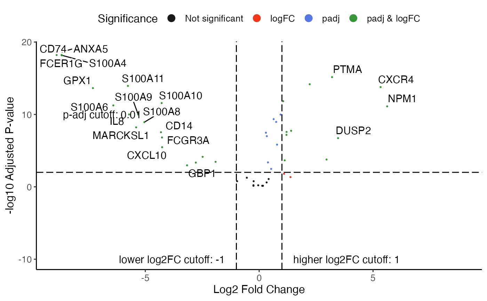

plotVolcano is a simple implementation and shares
most of arguments with other rliger plotting functions.
plotEnhancedVolcano is a wrapper function of
EnhancedVolcano::EnhancedVolcano(), which has provides
substantial amount of arguments for graphical control. However, that requires
the installation of package "EnhancedVolcano".
Usage
plotVolcano(
result,
group,
logFCThresh = 1,
padjThresh = 0.01,
labelTopN = 20,
dotSize = 2,
dotAlpha = 0.8,
legendPosition = "top",
labelSize = 4,
...
)
plotEnhancedVolcano(result, group, ...)Arguments
- result
Data frame table returned by
runWilcoxon- group
Selection of one group available from
result$group- logFCThresh
Number for the threshold on the absolute value of the log2 fold change statistics. Default
1.- padjThresh
Number for the threshold on the adjusted p-value statistics. Default
0.01.- labelTopN
Number of top differential expressed features to be labeled on the top of the dots. Default
20.- dotSize, dotAlpha
Numbers for universal aesthetics control of dots. Default
2and0.8.- legendPosition
Text indicating where to place the legend. Choose from
"top","bottom","left"or"right". Default"top".- labelSize
Size of labeled top features and line annotations. Default
4.- ...
For
plotVolcano, more theme setting arguments passed to.ggplotLigerTheme. ForplotEnhancedVolcano, arguments passed toEnhancedVolcano::EnhancedVolcano().
Examples
result <- runMarkerDEG(pbmcPlot)
#> ℹ Running Wilcoxon rank-sum test
#> ✔ Running Wilcoxon rank-sum test ... done
#>
plotVolcano(result, 1)
#> Warning: Removed 1 row containing missing values or values outside the scale range
#> (`geom_text_repel()`).
